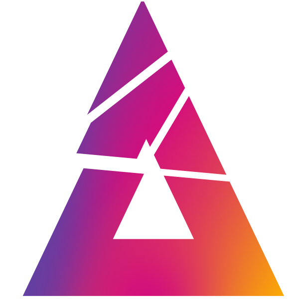

<mat-sidenav-container class="sidenav-container">
  <mat-sidenav
    #drawer
    class="sidenav"
    fixedInViewport="true"
    [attr.role]="(isHandset$ | async) ? 'dialog' : 'navigation'"
    [mode]="(isHandset$ | async) ? 'over' : 'side'"
    [opened]="!(isHandset$ | async)"
  >
    <mat-toolbar class="title">Blast Pro Series</mat-toolbar>
    <mat-nav-list>
      <a mat-list-item routerLink="/landing" class="menu-title">
        <mat-icon class="mat-18 mr-2">home</mat-icon>
        Accueil
      </a>
      <a mat-list-item class="menu-title"
        ><mat-icon class="mat-18 mr-2">tv</mat-icon>Live</a
      >
      <a mat-list-item class="menu-title"
        ><mat-icon class="mat-18 mr-2">people</mat-icon>Battle de fans !</a
      >
      <a mat-list-item class="menu-title"
        ><mat-icon class="mat-18 mr-2">attach_money</mat-icon>Pronostics</a
      >
      <a mat-list-item class="menu-title"
        ><mat-icon class="mat-18 mr-2">local_offer</mat-icon>Goodies</a
      >
      <a mat-list-item class="menu-title"
        ><mat-icon class="mat-18 mr-2">gamepad</mat-icon>Concours</a
      >
    </mat-nav-list>
  </mat-sidenav>
  <mat-sidenav-content>
    <mat-toolbar>
      <button
        type="button"
        aria-label="Toggle sidenav"
        mat-icon-button
        (click)="drawer.toggle()"
        *ngIf="(isHandset$ | async)"
      >
        <mat-icon aria-label="Side nav toggle icon">menu</mat-icon>
      </button>
      <div>
        
        <span class="title">{{ title }}</span>
      </div>
      <div class="toolbar-actions">
        <button
          matTooltip="Installer l'application"
          mat-icon-button
          (click)="installApp()"
          *ngIf="showInstallButton"
        >
          <mat-icon>get_app</mat-icon>
        </button>
        <button matTooltip="Caster l'événement" mat-icon-button>
          <mat-icon>cast</mat-icon>
        </button>
        <button matTooltip="Mon siège connecté" mat-icon-button>
          <mat-icon>event_seat</mat-icon>
        </button>
        <button
          mat-icon-button
          (click)="help()"
          matTooltip="Besoin de nous contacter ?"
        >
          <mat-icon class="mat-18">help</mat-icon>
        </button>
        <button
          mat-icon-button
          [matMenuTriggerFor]="(user | async) ? connected : disconnected"
        >
          <mat-icon>person</mat-icon>
        </button>
        <mat-menu #disconnected="matMenu">
          <button mat-menu-item (click)="openLogin()" class="menu-title">
            Connexion
          </button>
          <button mat-menu-item (click)="openSubscribe()" class="menu-title">
            Créer un compte
          </button>
        </mat-menu>
        <mat-menu #connected="matMenu">
          <button mat-menu-item routerLink="/user" class="menu-title">
            Mon profil
          </button>
          <button mat-menu-item (click)="signOut()" class="menu-title">
            Deconnexion
          </button>
        </mat-menu>
      </div>
    </mat-toolbar>
    <!-- Add Content Here -->
    <div [@routeAnimations]="prepareRoute(outlet)">
      <router-outlet #outlet="outlet"></router-outlet>
    </div>
  </mat-sidenav-content>
</mat-sidenav-container>
